Bottom view of a Binary Tree
Problem Statement: Given a Binary Tree, return its Bottom View. The Bottom View of a Binary Tree is the set of nodes visible when we see the tree from the bottom.
Examples
Example 1: Input:Binary Tree: 1 2 3 4 10 9 11 -1 5 -1 -1 -1 -1 -1 -1 -1 6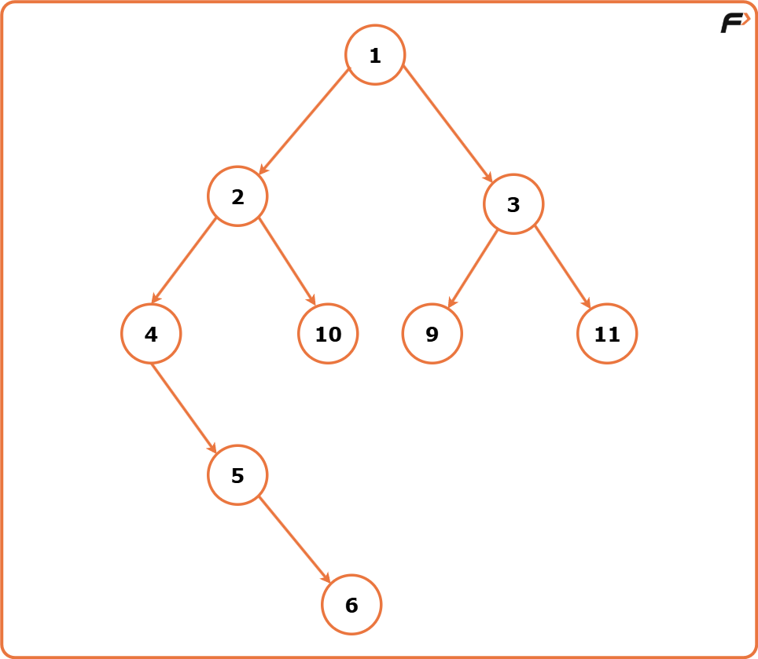
Output:Bottom View Traversal: [4, 5, 6, 3, 11] Explanation: The bottom view of the binary tree would comprise of the nodes that are the last encountered nodes for each vertical index.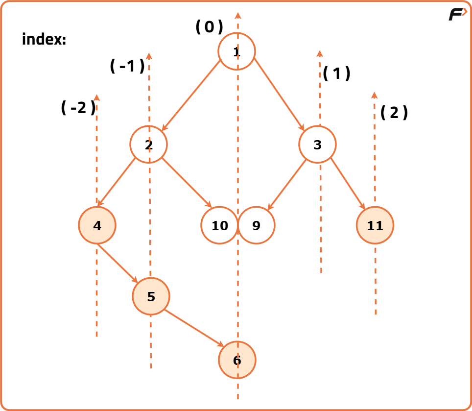
Example 2: Input:Binary Tree: 2 7 5 2 6 -1 9 -1 -1 5 11 4 -1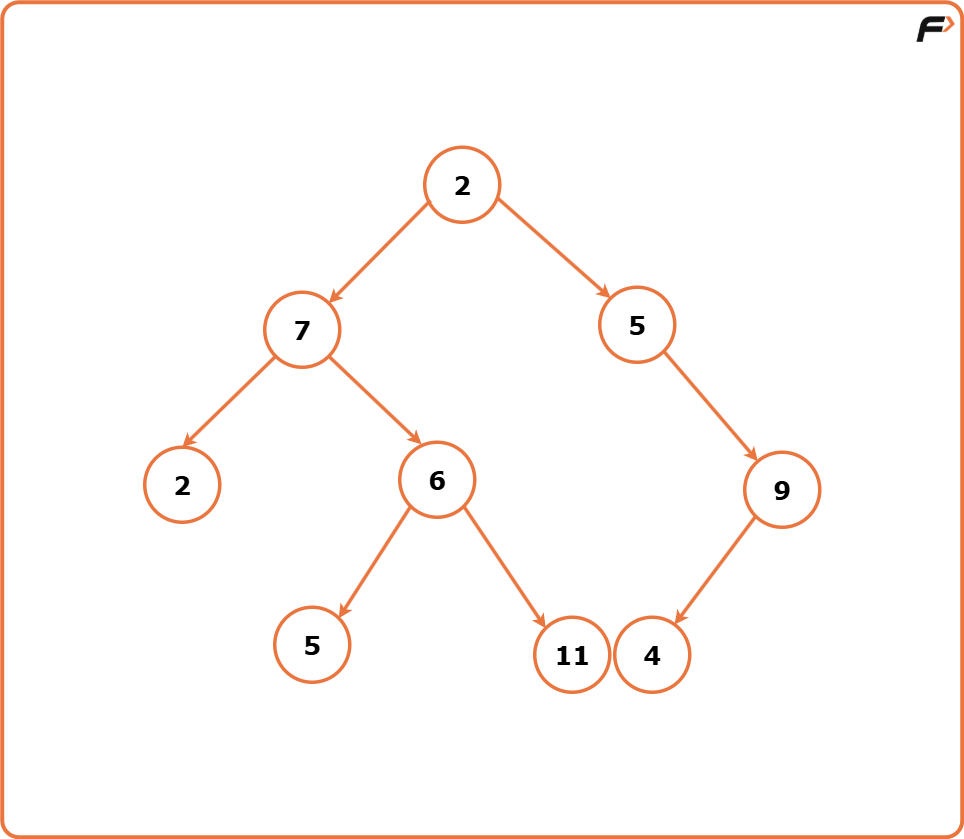
Output : Bottom View: [2 5 6 11 4 9] Explanation: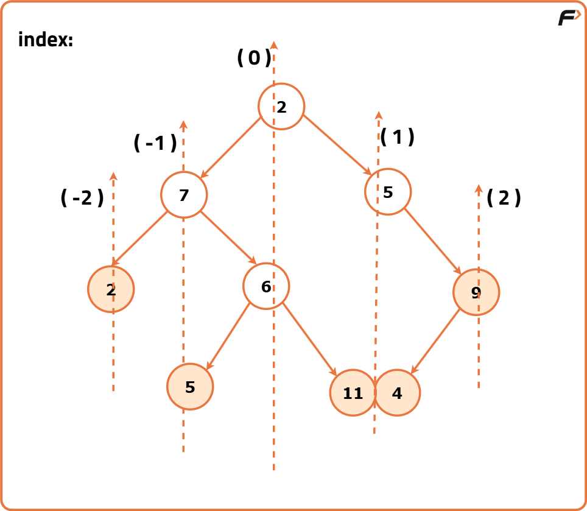

Disclaimer: Don’t jump directly to the solution, try it out yourself first.
Optimal Approach
Algorithm
To understand the bottom view of a binary tree, we imagine vertical lines passing through the tree.
- Each vertical line represents a unique vertical position.
- Nodes to the right of the center have positive vertical indices, increasing as we go further right.
- Nodes to the left have negative vertical indices, decreasing as we move left.
We use a map data structure to track nodes at each vertical level. During a level order (BFS) traversal, we update this map to always store the bottom-most node for each vertical index.
We begin by initializing a result vector ans to store the bottom view. If the tree is empty, we simply return this vector.
A map is created to store key-value pairs where the key is the vertical index, and the value is the node’s data at the lowest level seen at that index.
A queue is used to perform BFS. Each item in the queue consists of a node and its vertical index. The root node is added to the queue with a vertical index of 0.
During the BFS traversal, we process nodes in level order. For each node removed from the queue:
- We retrieve its vertical index.
- We update the map at this index with the current node’s data. This ensures that the latest (i.e., bottom-most) node at this vertical index is stored.
- If the node has a left child, we enqueue it with vertical index
current - 1. - If the node has a right child, we enqueue it with vertical index
current + 1.
After the traversal, we iterate through the map in sorted order of keys (vertical indices). The node values are pushed into the ans vector from left to right, giving the bottom view.
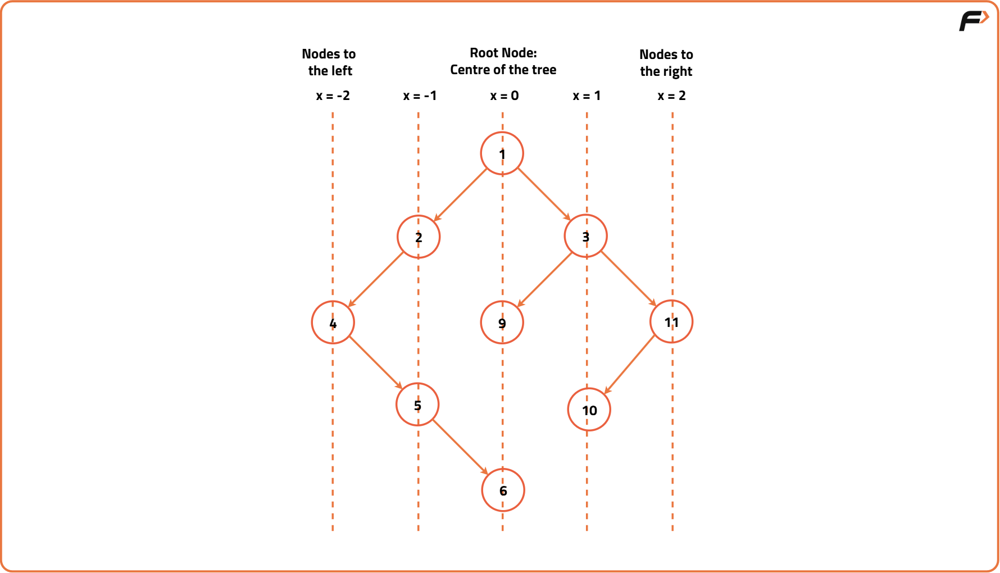
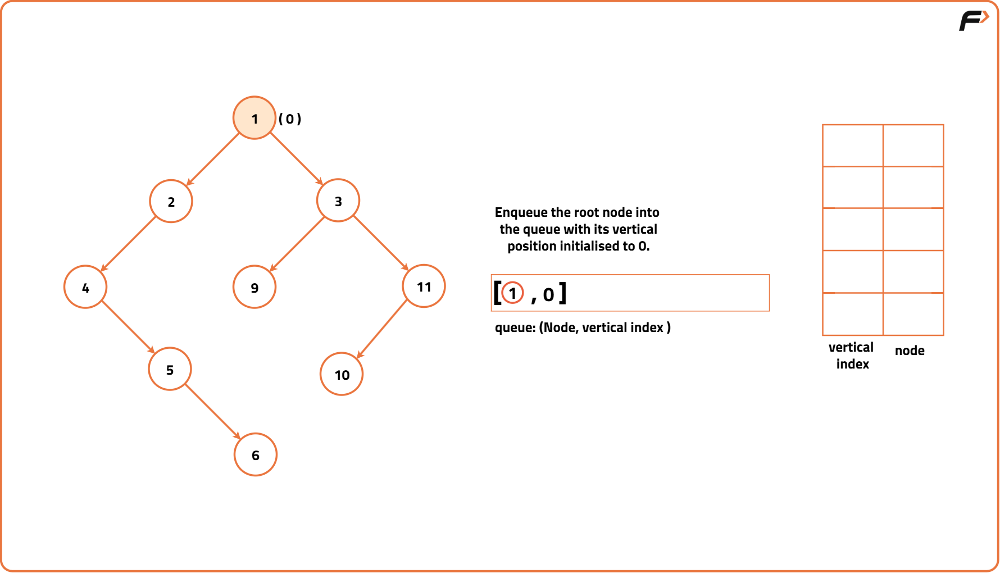
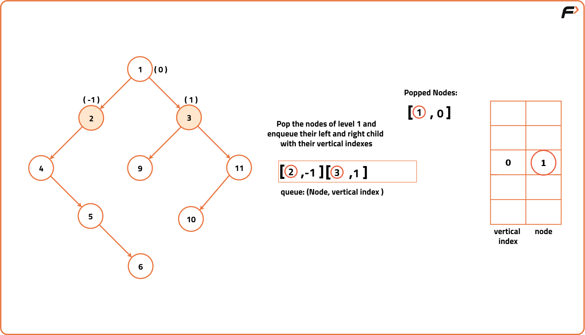
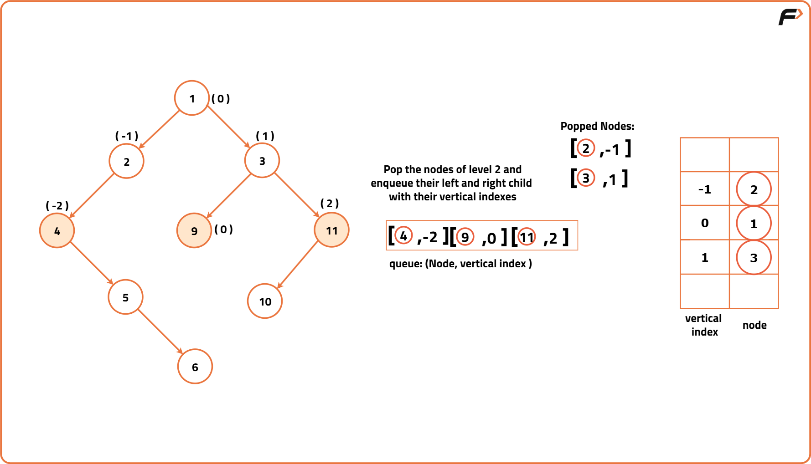
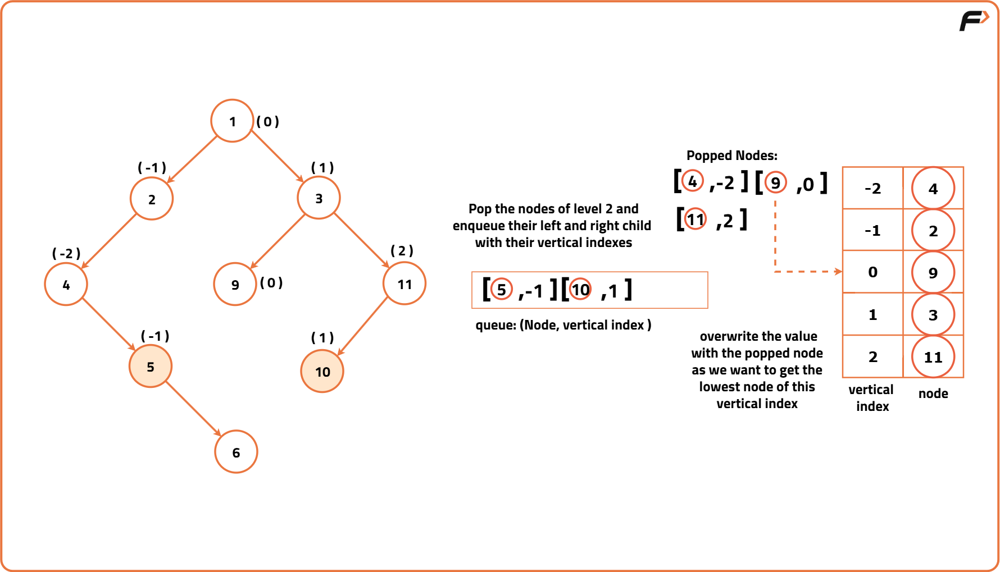
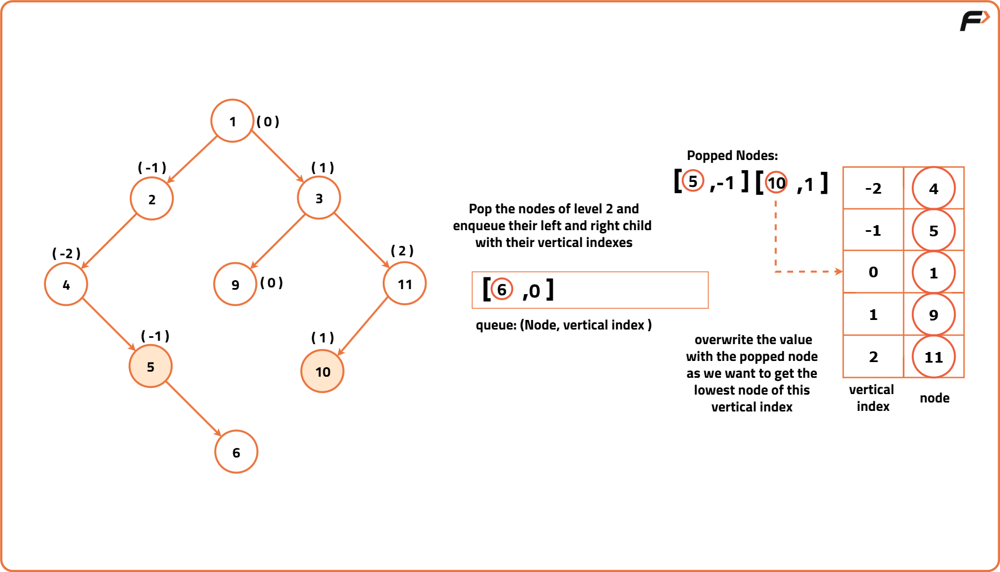
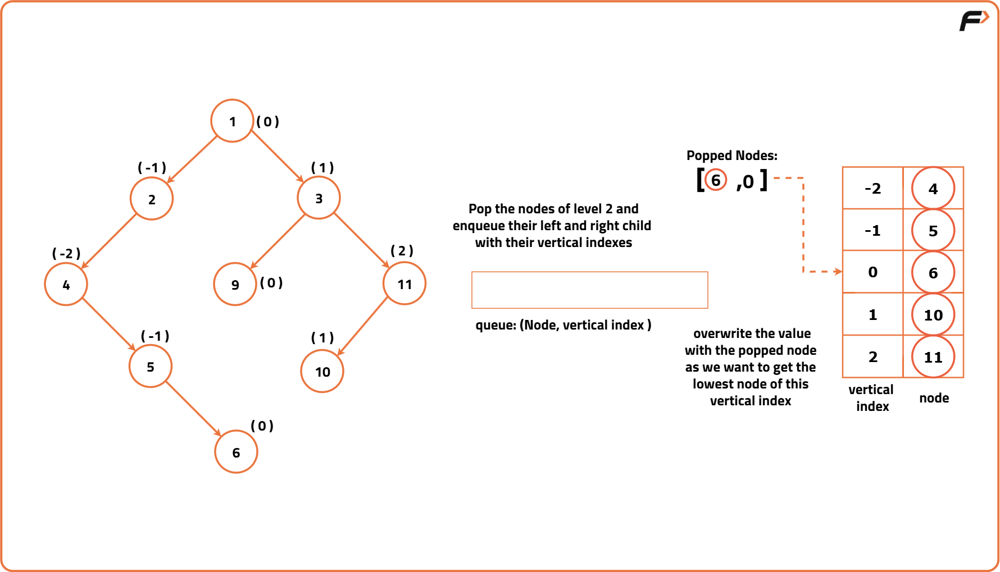
Code
#include <iostream>
#include <vector>
#include <set>
#include <queue>
#include <map>
using namespace std;
// Node structure for the binary tree
struct Node {
int data;
Node* left;
Node* right;
// Constructor to initialize
// the node with a value
Node(int val) : data(val), left(nullptr), right(nullptr) {}
};
class Solution{
public:
// Function to return the
// bottom view of the binary tree
vector<int> bottomView(Node* root){
// Vector to store the result
vector<int> ans;
// Check if the tree is empty
if(root == NULL){
return ans;
}
// Map to store the bottom view nodes
// based on their vertical positions
map<int, int> mpp;
// Queue for BFS traversal, each
// element is a pair containing node
// and its vertical position
queue<pair<Node*, int>> q;
// Push the root node with its vertical
// position (0) into the queue
q.push({root, 0});
// BFS traversal
while(!q.empty()){
// Retrieve the node and its vertical
// position from the front of the queue
auto it = q.front();
q.pop();
Node* node = it.first;
int line = it.second;
// Update the map with the node's data
// for the current vertical position
mpp[line] = node->data;
// Process left child
if(node->left != NULL){
// Push the left child with a decreased
// vertical position into the queue
q.push({node->left, line - 1});
}
// Process right child
if(node->right != NULL){
// Push the right child with an increased
// vertical position into the queue
q.push({node->right, line + 1});
}
}
// Transfer values from the
// map to the result vector
for(auto it : mpp){
ans.push_back(it.second);
}
return ans;
}
};
int main() {
// Creating a sample binary tree
Node* root = new Node(1);
root->left = new Node(2);
root->left->left = new Node(4);
root->left->right = new Node(10);
root->left->left->right = new Node(5);
root->left->left->right->right = new Node(6);
root->right = new Node(3);
root->right->right = new Node(10);
root->right->left = new Node(9);
Solution solution;
// Get the Bottom View traversal
vector<int> bottomView =
solution.bottomView(root);
// Print the result
cout << "Bottom View Traversal: "<< endl;
for(auto node: bottomView){
cout << node << " ";
}
return 0;
}
Complexity Analysis
Time Complexity: O(N) where N is the number of nodes in the Binary Tree. This complexity arises from visiting each node exactly once during the BFS traversal.
Space Complexity: O(N/2 + N/2) where N represents the number of nodes in the Binary Tree.